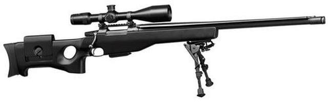

CZ 750 Sniper 308 Win 26" Barrel Synthetic Stock 10rd Detachable Mags
Description

Designed for elite military and law enforcement snipers, the CZ 750 Sniper is built to squeeze
every bit of
accuracy out of the .308 cartridge.
Performance characteristics
The synthetic thumbhole stock is adjustable for comb height as well as
length of pull. The underside of the fore-end is fitted with a 220mm long rail that provides multiple
attachment points for a bipod.Two scope mounting options are available for the 750 Sniper. A weaver rail
comes installed, or by removing
the rail, the integrated CZ 19mm dovetail may be used. The Sniper features a muzzle brake, thread protector,
mirage shield and two 10-round detachable magazines.The Sniper has a 26" barrel with 4-groove rifling in 1
in 10 twist. Scope not included
| Chambering |
.308 Win , 7.62x51NATO |
| Rate Of Twist |
1:10 in |
| Magazine Capacity |
10 |
| Magazine Type |
Detachable Box |
| Stock |
Composite, Adjustable LOP and Comb Height, Rail in Forend |
| Length Of Pull |
13.5-15 in |
| Sights |
Weaver Adapter Rail Mounted to Integral 19mm Scope Base |
| Barrel-Length |
26 in |
| Overall-Length |
48.03 in |
| Weight |
12.79 lbs |
| Trigger |
Mech Fully Adjustable |
| Safety |
Two-Position, Push-To-Fire |
Shipping
Estimated shipping times are posted on the product information page under the title "Ships On Or
Before:" please
note that all lead-times are estimates.
For items in our warehouse, we usually ship within 3 business days. For items only available at distribution
or
other sources, the ship time may be up to 10 business days.
For items only available at the manufacturer, the lead-time may be a few weeks or longer-- depending on
availability.
Please also note that some items are unique, hard to obtain, or one-of-a-kind, so Impact reserves the right
to
cancel your order should an item not be available to ship.
We will not charge your credit card until your product ships, except for certain special orders.
We normally will ship FedEx. If you need faster shipment, we can ship 2nd Day or Next Day for an extra
charge.
Returns
HOW DO I START THE RETURN PROCESS?
Log in to your www.TOPGUNS.com account and locate and click on the "Request Return" link.
An Impact Guns agent will review your request for a return and respond within two business days.
As an alternate method, you can send an email to sales@TOPGUNS.com. Please be sure to include your original
order number and relevant contact information.
View more:
AK-47 GP WASR HI-CAP 16″ Barrel, No Brake, Military Stock 7.62×39 30 Rnd Mag
Magnum Research Desert Eagle Mark XIX Pistol .44 Magnum 6" Barrel SS,
Muzzle
Brake 8rd